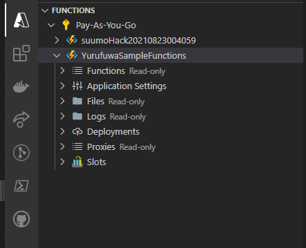
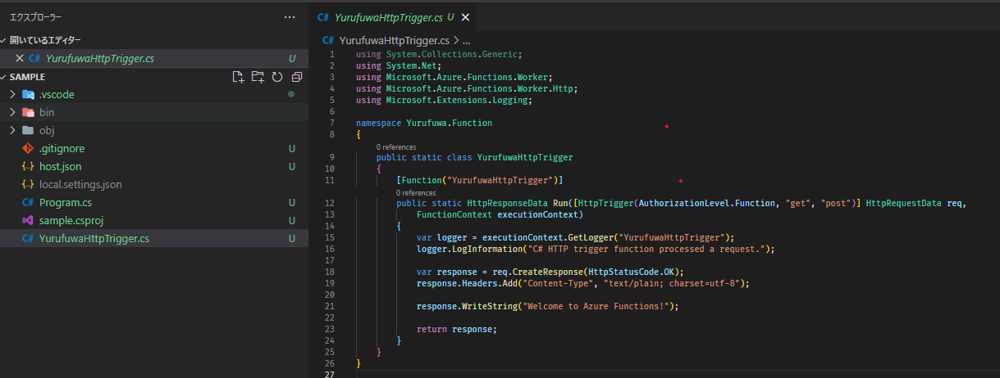
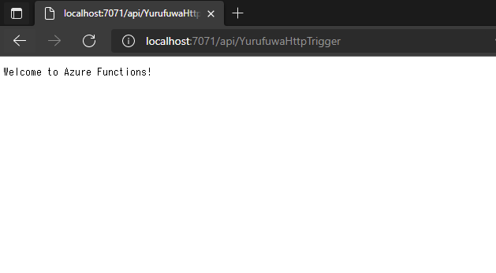
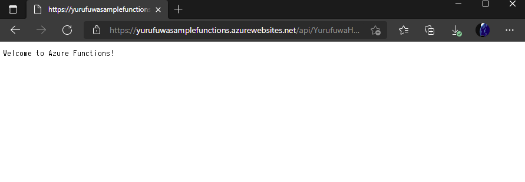

案外書ける
Azure Functions
Functions とは
aws で言う lambda にあたるサービス
サーバレスでコードを動かしてくれる
functions の名の通り 関数一つを動かすサービスみたいな感じでしょうか
対応言語 (v3)
| language | version |
|---|---|
| C# | .NET Core 3.1, .NET 5.0 |
| javascript | node 14, 12, 10 |
| F# | .NET Core 3.1 |
| Java | 11, 8 |
| PowerShell | 7.0, Core6 |
| Python | 3.9(preview), 3.8, 3.7, 3.6 |
| TypeScript | -(バージョンがない？） |
価格
従量課金サービスなんで怖いよね
| 従量制課金 | 料金 | 無料提供 (月々) |
|---|---|---|
| 実行時間 | ¥0.001792/GB 秒 | 400,000GB 秒 |
| 総実行回数 | ¥22.400/100万実行 | 100 万実行 |
ほかにも Premiumプラン という ハイスペック、コールドスタート無しのプランがあります。（高い）
無料分の範囲があるので、個人で使う分には十分に安く抑えられると思います。
作る
実際に作ってみる。
当然だけど、azureのアカウントが必要です
（ここでは説明しません）
必要なもの
- Azureアカウント
- Visual Studio Code (VisualStudioでもいいぞ！)
- Azure Functions Extension.
> Azure Functions: create function app in azure
vscodeで、Ctrl+P ↑のコマンドを入れて…
名前入れて… 言語選んで… リージョン選んで…
出来上がったものがこちらになります

>Azure Functions: Create Function
新たにプロジェクトを作るか？と聞かれるんで良い感じに答えると トリガーを選べと言われる

トリガーとは
作った functions を発火する為のイベント指定
トリガー一覧
一部抜粋
| トリガ名 | 役割 |
|---|---|
| HttpTrigger | リクエストされたら発火 |
| CosmosDBTrigger | 追加・更新があったら発火 |
| TimerTrigger | Cron形式で指定時間/間隔で発火 |
なんやかんやあって勝手にプロジェクトが作られる 
これ、なんと実行できます（ローカルデバッグ）
※ ただし下記修正が必要(えぇ…)
- <PackageReference Include="Microsoft.Azure.Functions.Worker.Extensions.Http" Version="3.0.12" />
- <PackageReference Include="Microsoft.Azure.Functions.Worker.Sdk" Version="1.0.3" OutputItemType="Analyzer" />
- <PackageReference Include="Microsoft.Azure.Functions.Worker" Version="1.1.0" />
+ <PackageReference Include="Microsoft.Azure.Functions.Worker.Extensions.Http" Version="3.0.13" />
+ <PackageReference Include="Microsoft.Azure.Functions.Worker.Sdk" Version="1.0.4" OutputItemType="Analyzer" />
+ <PackageReference Include="Microsoft.Azure.Functions.Worker" Version="1.5.1" />
http://localhost:7071/api/YurufuwaHttpTrigger
> Executing task: func host start <
Azure Functions Core Tools
Core Tools Version: 3.0.3477 Commit hash: 5fbb9a76fc00e4168f2cc90d6ff0afe5373afc6d (64-bit)
Function Runtime Version: 3.0.15584.0
Functions:
YurufuwaHttpTrigger: [GET,POST] http://localhost:7071/api/YurufuwaHttpTrigger
For detailed output, run func with --verbose flag.
[2021-10-01T13:59:21.424Z] Worker process started and initialized.
[2021-10-01T13:59:26.089Z] Host lock lease acquired by instance ID '00000000000000000000000084F97866'.

デプロイ
>Azure Functions: Deploy to Function App
ポチポチ～


いかがでしたか？
functions 簡単に作れて動かせることが分かったと思います。
次回は トリガーやバインドを少し深堀りできればと思います。 （気が乗ったら）